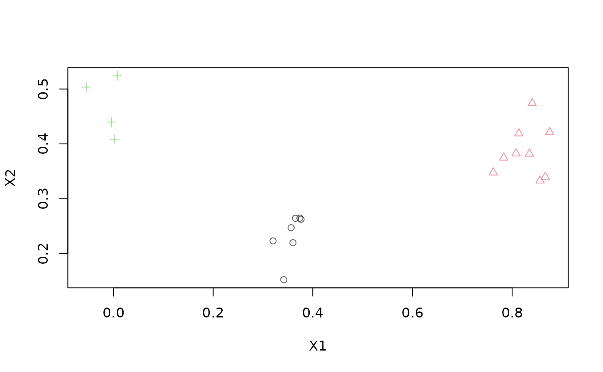
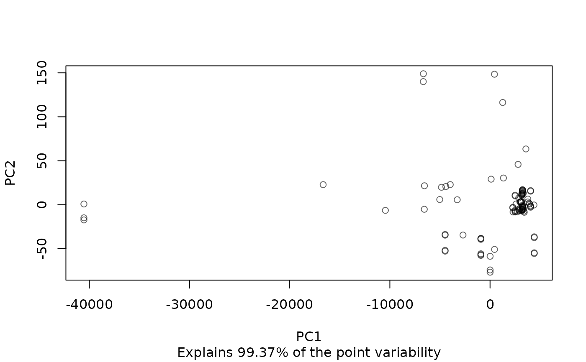

A DSD class that reads a data stream (text format) from a file or any R connection.
Usage
DSD_ReadStream(
file,
k = NA,
take = NULL,
sep = ",",
header = FALSE,
skip = 0,
col.names = NULL,
colClasses = NA,
outofpoints = c("warn", "ignore", "stop"),
...
)
DSD_ReadCSV(
file,
k = NA,
take = NULL,
sep = ",",
header = FALSE,
skip = 0,
col.names = NULL,
colClasses = NA,
outofpoints = c("warn", "ignore", "stop"),
...
)
# S3 method for class 'DSD_ReadStream'
close_stream(dsd, ...)
# S3 method for class 'DSD_ReadCSV'
close_stream(dsd, ...)Arguments
- file
A file/URL or an open connection.
- k
Number of true clusters, if known.
- take
indices of columns to extract from the file.
- sep
The character string that separates dimensions in data points in the stream.
- header
Does the first line contain variable names?
- skip
the number of lines of the data file to skip before beginning to read data.
- col.names
A vector of optional names for the variables. The default is to use
"V"followed by the column number. Additional information (e.g., class labels) need to have names starting with..- colClasses
A vector of classes to be assumed for the columns passed on to
read.table().- outofpoints
Action taken if less than
ndata points are available. The default is to return the available data points with a warning. Other supported actions are:warn: return the available points (maybe an empty data.frame) with a warning.ignore: silently return the available points.stop: stop with an error.
- ...
Further arguments are passed on to
read.table(). This can for example be used for encoding, quotes, etc.- dsd
A object of class
DSD_ReadCSV.
Details
DSD_ReadStream uses readLines() and read.table() to read data from an R
connection line-by-line and convert it into a data.frame.
The connection is responsible for maintaining where the stream
is currently being read from. In general, the connections will consist of
files stored on disk but have many other possibilities (see
connection).
The implementation tries to gracefully deal with slightly corrupted data by dropping points with inconsistent reading and producing a warning. However, this might not always be possible, resulting in an error.
Column names
If the file has column headers in the first line, then they can be used by setting header = TRUE.
Alternatively, column names can be set using col.names or a named vector for take. If no column
names are specified then default names will be created.
Columns with names that start with . are considered information columns and are ignored by DSTs.
See get_points() for details.
Other information columns are are used by various functions.
Reading the whole stream
By using n = -1 in get_points(), the whole stream is returned.
Resetting and closing a stream
The position in the file can be reset to the beginning or another position using
reset_stream(). This fails of the underlying connection is not seekable (see connection).
DSD_ReadStream maintains an open connection to the stream and needs to be closed
using close_stream().
DSD_ReadCSV reads a stream from a comma-separated values file.
See also
Other DSD:
DSD(),
DSD_BarsAndGaussians(),
DSD_Benchmark(),
DSD_Cubes(),
DSD_Gaussians(),
DSD_MG(),
DSD_Memory(),
DSD_Mixture(),
DSD_NULL(),
DSD_ReadDB(),
DSD_Target(),
DSD_UniformNoise(),
DSD_mlbenchData(),
DSD_mlbenchGenerator(),
DSF(),
animate_data(),
close_stream(),
get_points(),
plot.DSD(),
reset_stream()
Examples
# Example 1: creating data and writing it to disk
stream <- DSD_Gaussians(k = 3, d = 2)
write_stream(stream, "data.txt", n = 100, info = TRUE, header = TRUE)
readLines("data.txt", n = 5)
#> [1] "\"X1\",\"X2\",\".class\""
#> [2] "0.0245010299801124,0.366708913016978,3"
#> [3] "0.0413039887992415,0.547575232318746,3"
#> [4] "0.0323889522083195,0.461476000042854,3"
#> [5] "0.917045990450661,0.437805215774461,2"
# reading the same data back
stream2 <- DSD_ReadStream("data.txt", header = TRUE)
stream2
#> Data Stream from Connection (d = 2, k = NA)
#> Class: DSD_ReadStream, DSD_R, DSD
#> connection: data.txt (opened)
# get points
get_points(stream2, n = 5)
#> X1 X2 .class
#> 1 0.02450103 0.3667089 3
#> 2 0.04130399 0.5475752 3
#> 3 0.03238895 0.4614760 3
#> 4 0.91704599 0.4378052 2
#> 5 0.01111683 0.4660362 3
plot(stream2, n = 20)

# clean up
close_stream(stream2)
file.remove("data.txt")
#> [1] TRUE
# Example 2: Read part of the kddcup1999 data (take only cont. variables)
# col 42 is the class variable
file <- system.file("examples", "kddcup10000.data.gz", package = "stream")
stream <- DSD_ReadCSV(gzfile(file),
take = c(1, 5, 6, 8:11, 13:20, 23:41, .class = 42), k = 7)
stream
#> Data Stream from Connection (d = 34, k = 7)
#> Class: DSD_ReadStream, DSD_R, DSD
#> connection: kddcup10000.data.gz (opened)
get_points(stream, 5)
#> V1 V5 V6 V8 V9 V10 V11 V13 V14 V15 V16 V17 V18 V19 V20 V23 V24 V25 V26
#> 1 0 215 45076 0 0 0 0 0 0 0 0 0 0 0 0 1 1 0 0
#> 2 0 162 4528 0 0 0 0 0 0 0 0 0 0 0 0 2 2 0 0
#> 3 0 236 1228 0 0 0 0 0 0 0 0 0 0 0 0 1 1 0 0
#> 4 0 233 2032 0 0 0 0 0 0 0 0 0 0 0 0 2 2 0 0
#> 5 0 239 486 0 0 0 0 0 0 0 0 0 0 0 0 3 3 0 0
#> V27 V28 V29 V30 V31 V32 V33 V34 V35 V36 V37 V38 V39 V40 V41 .class
#> 1 0 0 1 0 0 0 0 0 0 0.00 0 0 0 0 0 normal.
#> 2 0 0 1 0 0 1 1 1 0 1.00 0 0 0 0 0 normal.
#> 3 0 0 1 0 0 2 2 1 0 0.50 0 0 0 0 0 normal.
#> 4 0 0 1 0 0 3 3 1 0 0.33 0 0 0 0 0 normal.
#> 5 0 0 1 0 0 4 4 1 0 0.25 0 0 0 0 0 normal.
# plot 100 points (projected on the first two principal components)
plot(stream, n = 100, method = "pca")

close_stream(stream)